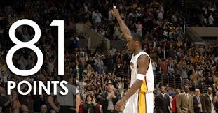
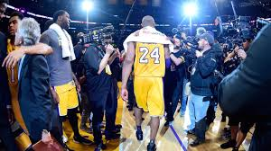
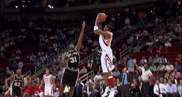
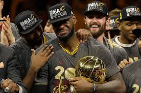

ここではNBAでの名場面について語っていきたいと思います。
驚異の81得点ゲームと伝説の引退試合
（2006.1.22/2016.4.13）
コビー・ブライアントの印象的な試合としてまず挙がるのが、歴代２位の81得点を叩き出した2006年のラプターズ戦だろう。前半を26得点で折り返したコビーは、後半に入るとさらにギアを上げ、多彩なオフェンスパターンからゴールを量産し55得点と大爆発。指揮官のフィル・ジャクソンが「マイケル（ジョーダン）のどの試合よりも凄かった」と話すほどの超絶パフォーマンスだった。
そしてもうひとつ忘れてはいけないのが、16年の引退試合だ。10点を追う残り２分16秒から９連続得点で１点差に迫ると、残り31.6秒にはジャンパーを沈め独力で逆転。ラストゲームで60得点をマークする“伝説”を残し、00年代を代表するスーパースターは20年間の現役生活にピリオドを打った。
稀代のスコアラーが35秒で13得点を奪取
（2004.12.9）
“Tracy McGrady 13 points in 35 seconds”というYouTubeの動画を観たことがあるファンも多いのではないだろうか。2004年12月９日、スパーズ相手にロケッツが８点のビハインドを負った残り35秒から、トレイシー・マッグレディがまず３ポイントをヒット。その10秒後に４点プレー、さらにもう１本長距離砲を打ち込み２点差に迫ると、残り1.7秒でとどめの３ポイントを沈め大逆転勝利。35秒間で13得点を稼ぐ離れ業を披露してみせた。
故郷に初優勝をもたらしレブロンが男泣き
（2016.6.19）
レギュラーシーズン73勝を記録したウォリアーズを相手に、キャブズが１勝３敗と崖っぷちの状況から第７戦まで持ち込んだ2016年ファイナル。迎えた大一番でも一進一退の攻防が続くなかで、同点の残り53秒にカイリー・アービングが決勝弾を沈め、キャブズが初のリーグ制覇を達成。生まれ故郷に栄冠をもたらしたレブロンの男泣きは、多くのファンの胸を打った。
こんな感じでNBAの名場面を書いていきました。
もしよければ、今回、ご紹介した名場面動画で見るとより一層わかりやすいと思うので、動画のリンクのほうを貼っていますので是非見ていってください！
コービーブライアントの81点試合はこちら コービーブライアントの引退試合はこちら トレイシーマグレディーの伝説の試合はこちら レブロンジェームスの優勝を決めた試合はこちら